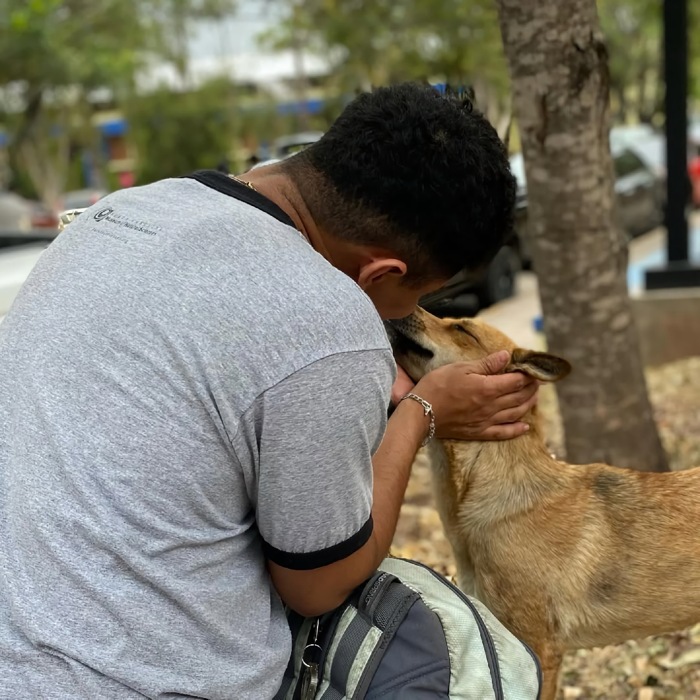
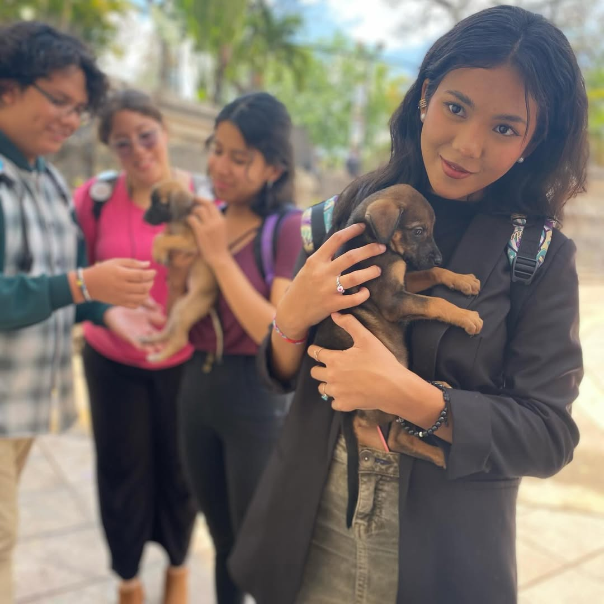
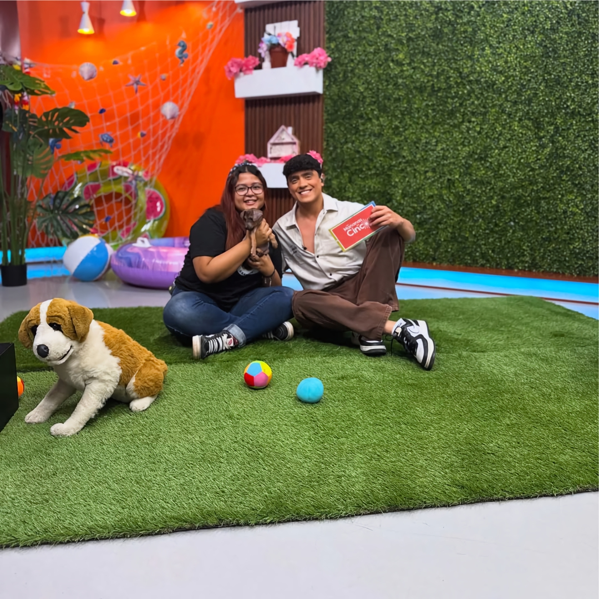
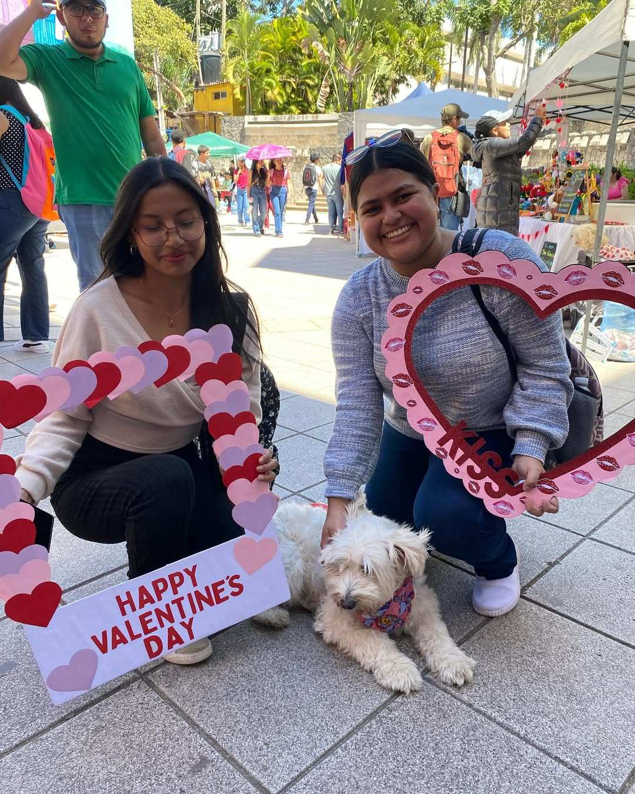
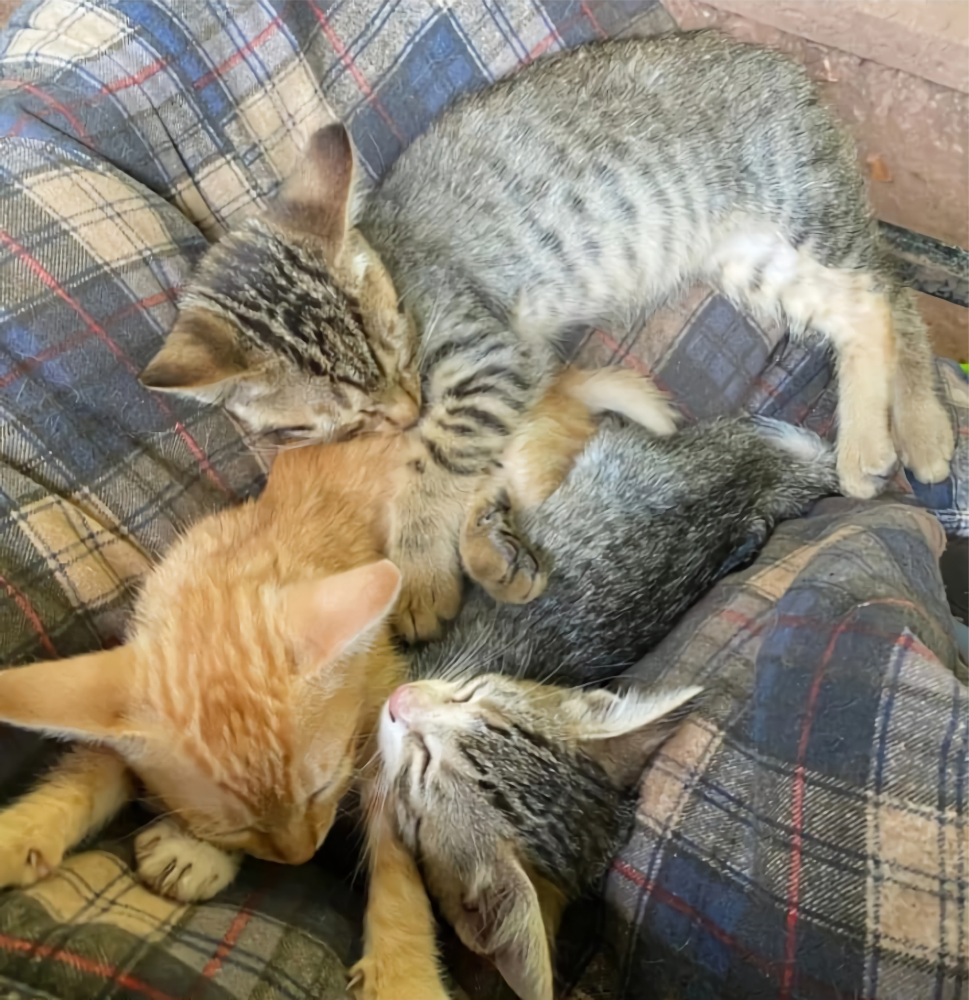

¿Te interesaría ser parte de nosotros o hacer donaciones?
Cada día, cientos de animalitos en situación de calle enfrentan el abandono, el hambre, las enfermedades y el maltrato. En nuestra organización, trabajamos incansablemente para brindarles una nueva oportunidad de vida, pero no podemos hacerlo solos. Tú puedes ser parte del cambio de muchas maneras. Una de las formas más directas es a través de donaciones, las cuales nos permiten cubrir tratamientos veterinarios, esterilizaciones, alimentación, refugio temporal y transporte para los rescates. También necesitamos voluntarios comprometidos que nos ayuden en tareas como el cuidado diario de los animales, limpieza de espacios, apoyo en actividades de adopción, difusión de campañas o simplemente brindando cariño a los peluditos que tanto lo necesitan.
Si no puedes ayudar de forma presencial, compartir nuestras publicaciones en redes sociales o hablar de nuestra causa con tus amigos y familiares es de gran ayuda para encontrar hogares responsables. Otra forma invaluable de colaborar es ofreciendo tu hogar como hogar temporal para perros o gatos rescatados mientras encuentran una familia definitiva. Y por supuesto, siempre puedes adoptar: al abrir tu corazón y tu casa a un animalito rescatado, no solo transformas su vida, también transformas la tuya.